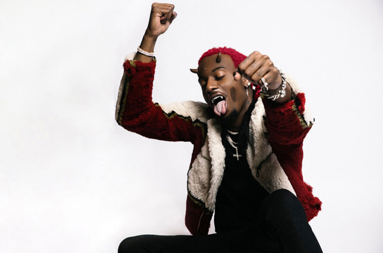
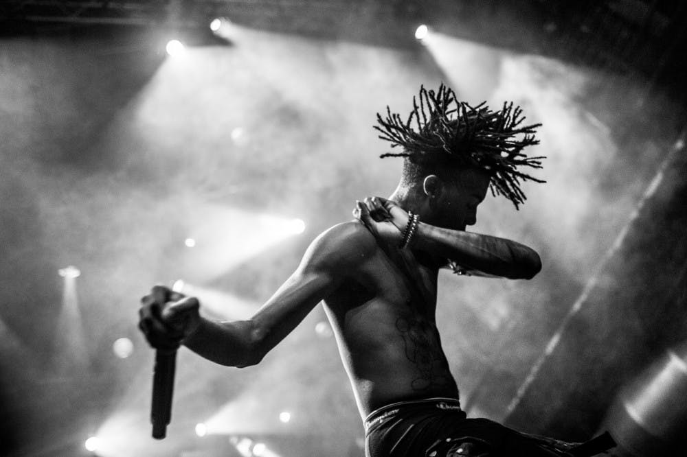

(born September 13, 1995), popularly known as Playboi Carti, is an American rapper from Atlanta, Georgia. His eponymous debut mixtape was released on April 14, 2017. He originally went by the moniker Sir Cartier (stylized as $ir Cartier) when he embarked on his music career in 2011.
He originally started rapping as Sir Cartier, releasing a mixtape titled THC: THE HIGH CHRONICAL$ on November 5, 2011, that has since been deleted from the Internet. He followed up with Young Misfit on November 12, 2012. He changed his artist name to Playboi Carti in May 2013. As Playboi Carti, he came into prominence in 2015 with his song "Broke Boi". Initially a part of the Atlanta-based Awful Records label, he also performed at the fashion events such as Yeezy Season 5, VFiles and Raf Simons events, with artists such as Lil Uzi Vert and A$AP Rocky. In 2016, he was featured on A$AP Mob's debut studio album, Cozy Tapes Vol. 1: Friends, on the tracks "London Town" and "Telephone Calls", which the latter was released as the second single from the album.
Carti's eponymous debut mixtape, which features guest appearances from Lil Uzi Vert, A$AP Rocky, and Leven Kali, was released on April 14, 2017. The self-titled release gained attention from various music publications, including XXL, Pitchfork, Spin, HotNewHipHop and PopMatters. XXL noted the track "Magnolia" as a standout cut, whereas Pitchfork critic Briana Younger thought that the release "finds a cloudy and economical mood and stays there, but it's Carti's magnetic confidence that turns just enough into plenty." The mixtape sold 28,051 units in its opening week.
In accompaniment with the mixtape's release, Carti embarked a tour, which featured him as an opening act for Gucci Mane and Dreezy.
For the end of 2017, Carti was featured on A$AP Mob's Cozy Tapes 2: Too Cozy, A$AP Ferg's Still Striving, and NAV's Perfect Timing. Carti was meanwhile working on his debut album, Die Lit, which would be released on May 11, 2018.
Die Lit was an album that released mixed reviews, but fans of Carti enjoyed the album. Die Lit includes notable tracks such as "Shoota", "Foreign", "Choppa Won't Miss", "Mileage", and "Poke it Out." This album included features from artists such as Lil Uzi Vert, Nicki Minaj, Chief Keef, Young Thug, Travis Scott, and Bryson Tiller.
Since the release of Die Lit, Playboi Carti has embarked on his own tour, while featuring on songs such as "Uh Uh" on Chief Keef's Mansion Musick and "Get Dripped" on Lil Yachty's Nuthin 2 Prove.
However, soon after the release of Die Lit and his tour, Carti was seen discussing a new album: "Whole Lotta Red". Over the course of the next few years, "Whole Lotta Red" would get leaked, or played by Carti himself at select shows. On November 23 2020, Carti announced that the album had been submitted to his label, along with posting several blurry photos. He would later announce several collaborations, with artists such as Kanye West and Future. DJ Akademiks would later tweet that the album would release on Christmas day, and was produced by Kanye West.
Fan reception was polarizing at the start, but the album met critical positive reception. The album would later grow on Carti fans and music enjoyers alike, and began receiving high praise.

Playboi Carti tells me his mood of late can be described as “punk monk.” He means it sort of holistically. The rapper has an almost religious devotion to the studio, spending every day there; his current project is the deluxe version of his recent album Whole Lotta Red. Carti says he barely even sleeps, preferring the Zen of the creative process. He splits his time between living in Atlanta and flying to California to see his son, though he’s plotting a move to New York, eyeing places on the Lower East Side. “It’s a city that I can get lost in,” he says.
“Punk Monk” is also the title of one of the more memorable cuts from Whole Lotta Red, which topped the charts upon release in December. It’s a track where the notoriously tight-lipped Carti gives listeners a glimpse into what he’s been thinking. There are devilishly candid assessments of his frustrations with the music industry, with Carti naming names. “They tried to turn me into a white boy, but I’m not Lil Dicky,” he growls in his newly minted vocal register — a grizzly squawk that sounds untethered from the limitations of human vocal cords. Conceptually, the song represents a formal juxtaposition of vibes, like meditating in a mosh pit. The 24-year-old rapper has long professed punk-rock inspirations, but now he’s reconciling them with something that resembles inner peace. “Some people don’t know how to be alone, but I love it,” Carti explains. “‘Punk Monk’ is just an anthem of being alone in this game, and the people that you got, you can keep them right there because that’s all you need.”
Whole Lotta Red arrived just before Christmas — “I wanted people to look at it like I gave them a gift. That’s what it was,” Carti says. The album caused a rift on social media, with die-hard fans immediately embracing the project, and others recoiling at its rougher edges. The production leans on harsh drum patterns, and Carti’s unique vocal expressionism sews into the fabric of this new, chaos-fueled, landscape. On “Stop Breathing,” his exasperated gasps punctuate the track’s distorted drums to hypnotic effect. Standout track “Control” might end up being the year’s best love song, sounding more like a punk ballad than a rap track. “Ever since I met youooouu,” Carti sings, swooningly stretching out that last word and flexing his nimble vocal register.
The release of Whole Lotta Red also marked the arrival of a new Playboi Carti, now adorned with candy-red braids and a vampire alter ego (“Vamp Anthem” goes so far as to sample Bach’s “Toccata and Fugue in D Minor, BWV 565,” made famous, of course, by Dracula). There are other eccentricities, too. His album art is a reference to Slash magazine, an underground punk zine printed in Los Angeles during the Seventies. And one of Carti’s new calling cards is the chaotic use of capitalization in song titles. He says it comes from remembering back on texting with old phones when you had to use the predictive text technology T9. “I say it in a song, too, like, ‘They can’t understand me, I’m talking hieroglyphics,’” Carti explains, referencing the Kid Cudi-assisted “M3tamorphosis.” “I was pointing out shit like that because I feel like my experiences created a lot of things for me, and then I let the people run with it.”
Carti has reason to see himself as a trendsetter. Since the release of 2018’s Die Lit, his impact on the shape and tenor of modern rap music has been hard to ignore. Nowadays, everyone raps with some version of what’s been dubbed “baby voice” — the high-pitched, ad-lib-filled style that surfs on treacly, ethereal production — but Carti’s unique vocal acrobatics remain unmatched. Despite not releasing anything for years, he was able to adapt to the language of a generation online. If you type Carti’s name into YouTube, you’re greeted with dozens of pages of fan-uploaded compilations of leaks, snippets, and remixes. The most exciting way to listen to Carti, for the past several years, has been through the vantage point of his mostly young and dedicated listeners.
Born Jordan Carter, Carti grew up in South Atlanta, and as a teenager balanced basketball and an eclectic sense of creativity. He came up rapping alongside the members of Atlanta’s Awful Records collective, who exposed him to an experimental style of rap production. His early appearances on songs by the producer Ethereal would sow the seeds for the Carti mythology. On 2015’s “Beef,” Carti delivers breezy punches over a sparse and subtle drum pattern, stretching his nascent vocalism with breathy ad-libs that sound like approximations of waves crashing. Carti would release his first mixtape in 2017, a self-titled project that featured the viral hit “Magnolia.” The song’s infectious hook — “In New York I milly rock/Hide it in my sock” — would eventually get memed into oblivion, a harbinger for the ways the internet was about to morph the experience of listening to your favorite artist. A year later, Carti’s debut, Die Lit, served as a bona fide proof of concept. Carti and the mumble-rap phenomenon he’s credited with giving rise to were here to stay.
Carti, though notoriously mum about his personal life, is not immune to controversy. Following the release of Whole Lotta Red, a firestorm emerged on social media after his ex-girlfriend, the rapper Iggy Azalea, with whom he has a child, alleged that Carti was failing his duties as a father. Carti didn’t respond to the allegations, but later posted a picture of himself with his son, Onyx, on Twitter. When we talk on the phone, he explains his reluctance to share more about his personal life with the world. “I take care of a lot of people,” he says. “I got a kid. But with the world, the only thing I want to show them is the creative process and the music. I think people want to see the normal side of Playboi Carti, but you can’t normalize me.”
Despite the ongoing pandemic, Carti says that when he was recording Whole Lotta Red he had his live performance at the top of his mind. “I visualize how the crowd is going to react to it,” he says. Like any rock star, Carti’s music is best experienced in person, which he says makes the timing of the record ideal. “I feel like Whole Lotta Red is the perfect album for me to show my presentation onstage,” he explains. “If I put this album out now, by the time we’re able to do these shows and get back active like we was, I will have gave them time to dissect the music.”
“Vampires live forever,” he offered nonchalantly. “Vampires is the most fashionable characters.”

The 24-year-old Atlanta rapper stays off social media (“I always let my phone die,” he often remarks in interviews), and he rarely says anything outlandish enough to end up in headlines on gossip sites. Still, everyone has strong opinions about the way he makes music. Since emerging on SoundCloud with songs like “YUNGXANHOE” and “Broke Boi” in the mid-2010s, he has defied the traditional conventions of rap music in a way that pisses off hip-hop purists with as much intensity as it excites anyone in search of something new. Carti has assumed the role of rap’s latest disruptive lightning rod, sparking conversations about how the genre should (and shouldn’t) evolve next.
Playboi Carti was born on the exact same day that Tupac Shakur died, a piece of trivia that fits so well with the storyline of his career that it almost sounds made up. His music, which reimagines the traditional role of a rapper, sounds nothing like the songs from hip-hop’s Golden Age. Instead of focusing on writing intricate lyrics or establishing a commanding mic presence, Carti uses his voice as an accent mark on each beat he encounters, leaning on repeated refrains and off-the-wall ad-libs to propel his songs forward. In the process, he has flipped the typical relationship between a rapper and a producer on its head. Carti likes to let producers take the lead, figuring out ways to rap inside beats instead of overpowering them. He acts as a conductor, using his voice as a means of orchestrating energy flow rather than delivering overcomplicated lyrics. For Carti, the meaning of each word matters much less than the feeling it communicates.
In the past few years, Carti has picked up the experimental rap torch from artists like Young Thug and run with it in his own direction. Thug inspired a whole era of rappers to prioritize eccentric melodies and innovative vocal deliveries, but Carti took a sharper left turn than any of his peers. The baby voice in particular is a step no one else thought to take, and according to people who have heard the unreleased music he’s working on now, Carti is pushing his sound into even stranger places. “When he starts to play me music, it quickly becomes clear that he’s entered into new vocal territory,” wrote Ben Dandridge-Lemco in a 2019 Fader cover story. “The baby voice is still present on multiple songs, but he’s warped it into a higher pitch, stretching his voice into something much more unorthodox.”
This push and pull is exactly what makes an artist like Playboi Carti so important. Since 2017, hip-hop has been the most popular genre in the United States. Decades removed from its inception, rap is no longer an upstart artform that exists at the fringes of pop culture. As it has evolved, the genre’s sound has broadened to incorporate more melody, lending itself to a wider, more mainstream audience. But to retain the edge and excitement that energized rap in the first place, the genre needs artists like Carti, who dare to experiment and push it in new directions. Especially in a streaming ecosystem that often rewards homogeneous music that can slide into playlists without disrupting flow, hip-hop needs outliers like Carti, who can throw a wrench in the system and break up monotony.